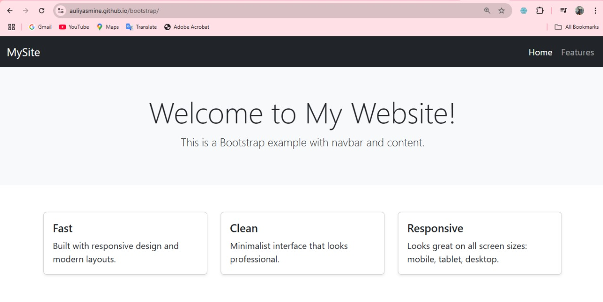

1. Mengapa menggunakan CSS dan JavaScript dalam pemrograman web?
CSS dan JavaScript adalah dua teknologi penting dalam pengembangan web yang memiliki peran berbeda namun saling melengkapi. CSS digunakan untuk mengatur tampilan dan tata letak halaman web, seperti warna, font, dan posisi elemen, sehingga membuat halaman web lebih menarik dan mudah dibaca. Dengan CSS, pengembang dapat memisahkan konten dari presentasi, memungkinkan perubahan tampilan tanpa mengubah struktur HTML.
Sementara itu, JavaScript digunakan untuk menambahkan interaktivitas dan dinamika pada halaman web. Dengan JavaScript, pengguna dapat berinteraksi dengan halaman melalui klik, input formulir, atau pergerakan mouse, yang kemudian dapat memicu perubahan konten atau tampilan secara real-time tanpa perlu memuat ulang halaman. Hal ini membuat pengalaman pengguna lebih responsif dan menarik.
2. Bagaimana CSS dan JavaScript dapat diintegrasikan dalam pemrograman web?
Integrasi CSS dan JavaScript dalam pengembangan web dapat dilakukan dengan beberapa cara. CSS dapat ditambahkan langsung ke elemen HTML melalui atribut style, disisipkan dalam tag <style> di bagian <head>, atau dimuat dari file eksternal menggunakan tag <link>. JavaScript dapat disisipkan dalam tag <script> di bagian <head> atau sebelum penutup tag </body>, atau dimuat dari file eksternal menggunakan atribut src dalam tag <script>.
Selain itu, JavaScript dapat digunakan untuk memanipulasi gaya elemen HTML secara dinamis. Misalnya, dengan menggunakan document.getElementById("id").style.property = "value", JavaScript dapat mengubah properti CSS seperti warna, ukuran, atau posisi elemen berdasarkan interaksi pengguna. Hal ini memungkinkan pengembangan halaman web yang lebih interaktif dan responsif terhadap tindakan pengguna.
3. Jelaskan apa saja keuntungan menggunakan JavaScript dan CSS?
Penggunaan CSS memberikan berbagai keuntungan dalam pengembangan web. Dengan CSS, pengembang dapat mengontrol tampilan dan tata letak halaman secara konsisten, memisahkan konten dari presentasi, serta mengurangi duplikasi kode. CSS juga memungkinkan pembuatan desain yang responsif, menyesuaikan tampilan halaman dengan berbagai ukuran layar perangkat, sehingga meningkatkan pengalaman pengguna.
JavaScript, di sisi lain, memungkinkan penambahan interaktivitas dan dinamika pada halaman web. Dengan JavaScript, pengembang dapat membuat elemen yang merespons tindakan pengguna, seperti validasi formulir, animasi, atau pembaruan konten secara real-time. JavaScript juga kompatibel dengan semua browser modern dan didukung oleh komunitas besar, sehingga memudahkan pengembangan dan pemecahan masalah.
4. Jelaskan apa saja keuntungan menggunakan Bootstrap?
Bootstrap adalah framework front-end yang memudahkan dan mempercepat proses pengembangan web. Dengan Bootstrap, pengembang dapat menggunakan komponen siap pakai seperti tombol, formulir, navigasi, dan lainnya, yang sudah dirancang dengan tampilan yang konsisten dan responsif. Hal ini mengurangi waktu dan usaha yang diperlukan untuk membuat elemen UI dari awal.
Selain itu, Bootstrap dirancang dengan pendekatan mobile-first, memastikan bahwa halaman web akan tampil dengan baik di berbagai perangkat, mulai dari ponsel hingga desktop. Bootstrap juga kompatibel dengan semua browser modern dan didukung oleh komunitas yang aktif, menyediakan dokumentasi lengkap dan berbagai sumber daya yang membantu pengembang dalam proses pengembangan.
5. Contoh penggunaan Bootstrap dan fungsinya
Salah satu contoh penggunaan Bootstrap yang paling umum adalah untuk membuat navbar (navigasi bar) yang responsif. Navbar adalah menu horizontal yang biasanya ada di bagian atas halaman web. Isinya bisa berupa nama website, dan beberapa tautan seperti "Home", "Tentang Kami", atau "Features". Dengan menggunakan Bootstrap, kita bisa membuat navbar dengan cepat dan tampilan yang sudah rapi, tanpa harus menulis banyak kode CSS sendiri.
